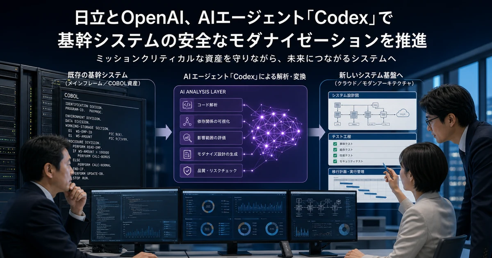

日立とOpenAI、Codexで基幹システム刷新を支援へ—金融から展開

- 日立とOpenAIが、古い基幹システムの刷新を支援するAIソリューションの開発を始めます。
- Codexで既存のプログラムを解析し、設計の見える化から新システムの移行テストまで支援する計画です。
- 金融機関から始め、幅広い業界へ順次展開することをめざしています。
何が発表されたか
日立製作所は、OpenAIとの連携を広げ、古い基幹システムの刷新をAIで支援する方法を共同で開発すると発表しました。両社のFDE（顧客の現場に入り、課題解決を支える技術者）が協力します。日立の公式発表日は2026年6月17日です。
使うのは、OpenAIのAIエージェント「Codex」です。日立が長年培ってきた、止めにくい重要システムの開発知識と組み合わせます。まず金融機関向けから始め、その後は幅広い業界へ順次広げる計画です。現時点の公式発表は開発開始と今後の計画であり、具体的な提供開始日や料金は示されていません。
設計の見える化から移行テストまで支援
古いシステムでは、設計書が十分に残っていなかったり、長年の変更で仕組みが分かりにくくなったりします。日立とOpenAIは、Codexで既存のソースコードを解析し、そこからシステム全体の大まかな仕様を見える形にすることをめざします。
支援する範囲は、コードを新しい言語へ変える作業だけではありません。公式発表では、既存コードから上位仕様を見える化する工程から、新システムの移行テストまでを対象に、信頼できる方法を確立すると説明しています。日立は、この方法を自社サービス「モダナイゼーション powered by Lumada」へ組み込む計画です。
COBOL資産では設計書を作り直してからJavaへ
日立の2026年版技術資料には、COBOLで作られた古いシステムを移す具体的な進め方も示されています。まずCOBOLのソースコードから設計書を作り直し、次にJava用の設計書へ変換し、その後にJavaのソースコードを生成する方法です。
いきなり古いコードを新しいコードへ置き換えるのではなく、途中に設計書を入れることで、後から人が内容を確認し、保守しやすくする考え方です。ただし、この技術資料で説明された方法のすべてにCodexを使うとは書かれていません。今回のOpenAIとの共同開発とは、分けて理解する必要があります。
なぜ会社の仕事に重要か
基幹システムは、会計、顧客管理、受発注など、会社の中心業務を動かします。古くても簡単には止められず、仕組みを知る技術者が退職すると、変更の危険と費用が大きくなります。AIでコードの読み取りや設計の見える化を支援できれば、刷新の準備にかかる負担を減らせる可能性があります。
一方で、公式発表は「AIに任せれば安全に移行できる」と約束するものではありません。会社が導入を検討する場合は、AIが作った仕様書やコードを誰が確認するか、既存システムと同じ結果になるかをどうテストするか、機密コードをどう守るかを先に決める必要があります。提供時期、料金、対応する言語やシステムの範囲は、今後の正式発表を確認する必要があります。
※ 本記事は公開時点の一次情報にもとづいています。最新の状況は出典をご確認ください。
自社を「AIに選ばれる会社」へ
株式会社AIMAは、LLMO（AI検索対策）に特化した会社です。月額5万円で、相談回数・対象範囲内の記事作成と修正は回数無制限。最低契約期間もありません。

監修者：水間 雄紀
株式会社AIMA 代表取締役
1986年和歌山県生まれ、近畿大学卒。金融機関、経営コンサルティング会社を経て、2018年にコンテンツ制作の専門会社である株式会社circlizeを創業。2024年、ラグザス株式会社に事業譲渡。現在は株式会社AIMAにてAI×マーケティング事業に従事し、株式会社フォーティーファイヴでコンテンツの品質管理責任者を務める。
監修者・運営会社について